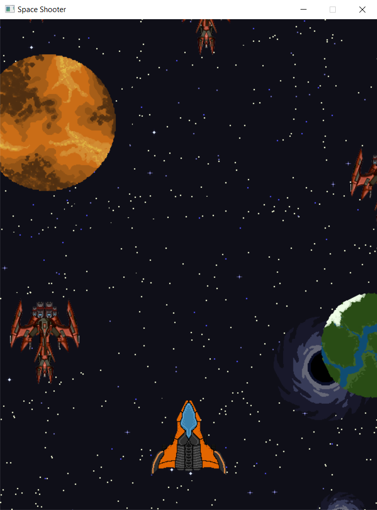
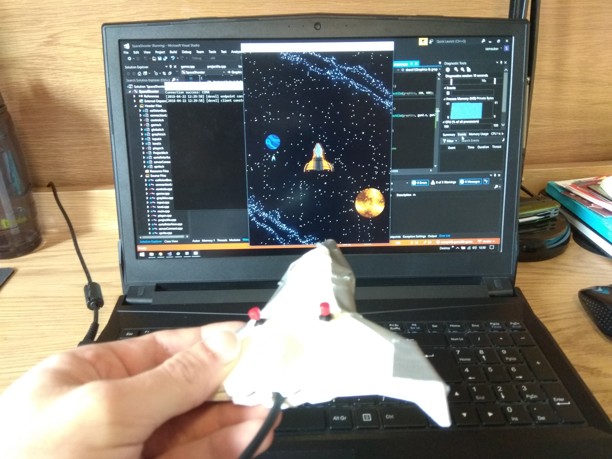
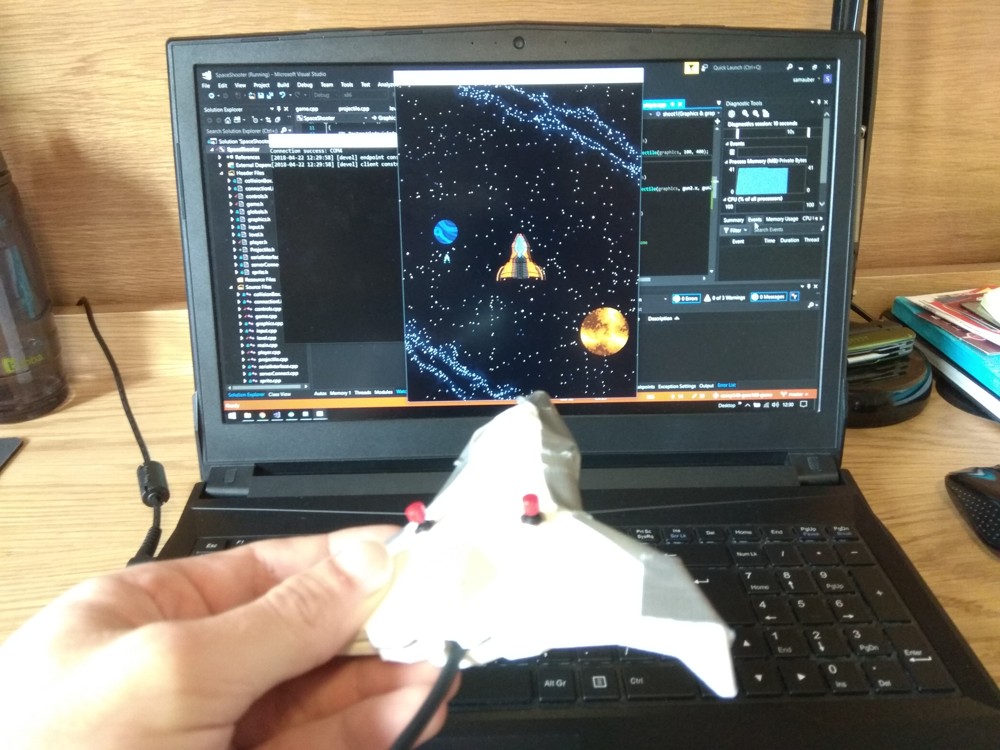

Introduction of the Game
The game I will be doing usability research on is a concept game that I made for a custom controller in my first year for COMP140.
The game is a generic vertical shoot 'em up bullet hell type of game, in which you get to control the spaceship with a physical custom controller that is in the same shape as the in-game spaceship.
The game is very much just a basic prototype to show how the controller could be used, there isn’t much content within the game, all the player can do is move around and shoot at enemies, there is no win or lose states.
I will be doing research on seeing how usable and enjoyable it is to use the custom controller to control the in-game spaceship.
I will also research on what users think about the design and comfort of the controller, to see if it could be improved.
Images of the game and controller
 
